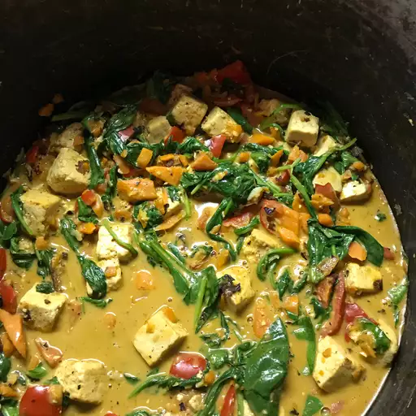

Healthy Tofu Stir Fry with Peanut Sauce

Description
This tofu stir fry recipe is healthy, filling and full of flavour, and it's vegan!
Ingredients
- 1 can light coconut milk
- ¼ cup peanut butter
- 2 tablespoons soy sauce
- 2 tablespoons brown sugar
- 1 tablespoon lime juice
- 1 teaspoon Sriracha sauce
- ½ teaspoon ground chili pepper
- 1 tablespoon olive oil
- 2 carrotes, diced
- 1 red bell pepper, diced
- 1 package firm tofu, drained and cut into 1-inch cubes
- 4 garlic cloves, minced
- 2 tablesppons minced fresh ginger
- 4 cups baby spinach
- 1½ cups cooked brown rice
Steps
- Whisk coconut milk, peanut butter, soy sauce, brown sugar, lime juice, Sriracha sauce, and ground chili pepper together in a bowl until a smooth sauce forms.
- Heat oil in a large skillet over medium-high heat. Add carrots and bell pepper; sauté until just tender, 1 to 2 minutes. Add tofu and sauté until lightly browned, about 4 minutes per side. Add garlic and ginger; cook and stir until fragrant, about 30 seconds.
- Pour sauce into the skillet and stir to coat tofu and vegetables. Cook until flavors combine, about 5 minutes. Reduce the heat to low, then stir in spinach, 1 cup at a time, until wilted. Serve over brown rice.